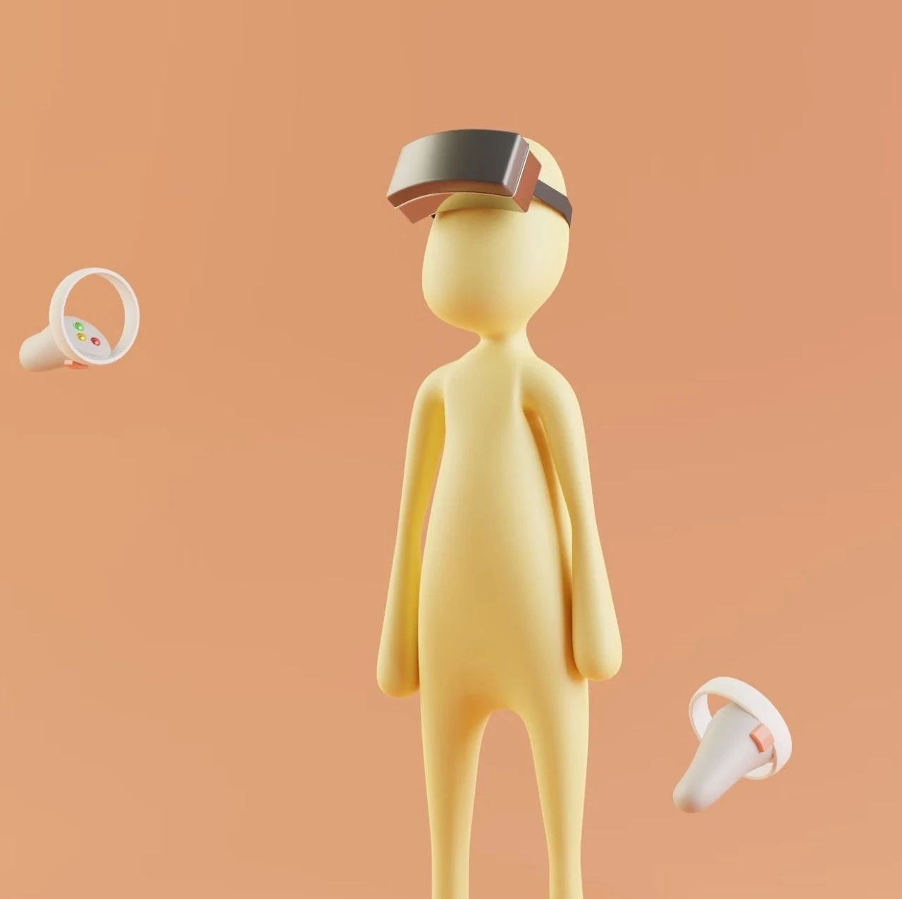

SeeDAO | 关于加密游戏的有力论述 - 我们为什么构建《黑暗森林》
作者: 翻译公会 Demian
分类:
Web3, SeeDAO, SeeDAO翻译公会
游戏可能位于这个世界的浪潮之巅，它们可以利用区块链带来的独特的激励机制和价值所有权模型。

原文链接：https://gubsheep.substack.com/p/the-strongest-crypto-gaming-thesisCrypto 并不是某种渐进式的创新。反之，它从根本上开启了以前所不可想象的工作方式，这在很多领域都有所体现：公司被重新构想为 DAO，传统金融工具被构想为无需许可的 DeFi（Decentralized Finance，去中心化金融） 协议，法律被构想为智能合约等等。将来重要的去中心化应用将很大程度上依赖于区块链提供的新功能，而不仅仅是对现有 App 的逻辑进行改进。这与我们在以前的计算平台上看到的模式相同：智能手机、万维网和个人电脑。在上述例子中，持续时间最长、影响最大的技术应用都是利用新技术来进行变革，而不是仅仅只把旧事物打磨得更加精细。对比下社交媒体与门户网站、在线购物网站与电子商品目录，或交互 TV 与互联网。游戏可作为新技术的风向标。其对技术需求高，但风险较低，与传统商业/金融应用相比，安全与合规问题相对不那么重要，所以可实现快速迭代以探索新技术的可扩展性和可用性。对一个似乎“只有”游戏的新平台持轻视态度是很短视的，有远见的人会认为这是一个宝贵的测试环境。想想看，太多移动时代全新的交互模式和操作习惯都来源于早期的移动端游戏，比如《涂鸦跳跃》（Doodle Jump）、《割绳子》（Cut the Rope）还有《愤怒的小鸟》（Angry Birds）等等。如果我们承认游戏可作为新技术的风向标，并且新技术倾向于真正新的功能而不是渐进式改进，那么接下来几年加密应用设计的前沿将在加密原生游戏中找到。一款优秀的加密原生游戏，应该是能最大程度地适配区块链架构开发模式和去中心化理念的游戏：游戏数据的真实性由区块链保证。区块链不仅用作数据的辅助存储或者作为服务器中的数据“镜像”。所有有意义的数据都应该存储在链上——而不仅仅只是资产所有权。这能让链上游戏充分利用区块链的可编程性：无需许可即可互操作的，透明的数据存储。
游戏中的逻辑和规则都是通过智能合约实现的。例如游戏中的战斗模式等玩法，而不仅仅是所有权，全都是在链上实现的。
游戏是按照开源共享的原则进行开发的。 包括合约和客户端都应该是开源的。第三方开发者有权通过插件、第三方客户端、可互操作的智能合约，甚至重新部署合约来定制甚至分叉出他们自己的游戏。这反过来又允许开发者利用整个社区的创意来输出和建设。
游戏与客户端无关。 这与以上三点密切相关。判断一个游戏是否是真正的加密原生游戏，只需要考虑这样一个问题：“如果开发者提供的客户端明天就消失了，这个游戏还能玩吗？” 倘若游戏数据可以被无需许可地存储在链上，而且游戏逻辑可以无需许可地执行，并且社区可以在不依赖核心团队提供的接口的情况下与智能合约进行交互，那么答案往往是肯定的。
游戏能承载真实世界的数字资产。区块链是下一代的价值互联网，数字资产在默认情况下需要与加密货币进行互操作。这会激励游戏开发者为其玩家和社区构建正向的激励结构。
这并不是说只有加密原生游戏才能成功（无论是商业上或是艺术上），其他以较弱的方式使用区块链的游戏就不能。但是，如果我们考察区块链的长期影响，加密原生游戏绝对是最重要的部分之一。这些游戏寻求创新全新的交互和游戏机制，而不是仅仅对现有游戏进行渐进式改进。他们为我们提供了一个模拟沙盒，类似一个未来数字世界的缩影，然后用游戏来了解这些机制将如何在未来世界如何发挥作用。游戏可能位于这个世界的浪潮之巅，它们可以利用区块链带来的独特的激励机制和价值所有权模型。在之后的帖子中，我们将讨论一些重要的新功能，以及我们如何使用 ZK Games（如 Dark Forest）去从概念上证明这些功能的实现。